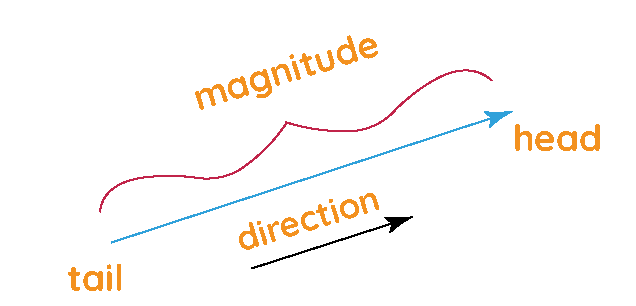

Vectors
What is a vector mathematically ?
In mathematics, a vector is a quantity that has both magnitude and direction. It can be represented by a directed line segment, whose length is the magnitude of the vector and with an arrow indicating the direction. The direction of the vector is from its tail to its head. Two vectors are the same if they have the same magnitude and direction.
Vectors are often used to represent physical quantities such as force, velocity, and acceleration. They can also be used to represent geometric objects such as lines, planes, and volumes.
Characteristics
-
Magnitude: The magnitude of a vector is its length. It is a non-negative number.
-
Direction: The direction of a vector is the direction in which it points. It can be represented by an angle or a unit vector.

- Linearity: Vectors can be added and subtracted in a way that preserves their magnitude and direction.
- Associativity: The order in which vectors are added or subtracted does not matter.
- Commutativity: Vector addition and subtraction are commutative operations, meaning that the order of the vectors does not matter.
- Scalar multiplication: Vectors can be multiplied by scalars, which are numbers. Scalar multiplication changes the magnitude of a vector but not its direction.
- Vector multiplication: Vectors can be multiplied by other vectors. Vector multiplication is a more complex operation that can be used to find the area of a parallelogram or the volume of a parallelepiped.
Vector in computation and AI
In the field of computing, vectors are defined similarly to how they are defined in mathematics, but they are also used in specific contexts related to artificial intelligence (AI). In AI, vectors are used to represent and manipulate data in the form of one-dimensional arrays.
In the context of AI, a vector can represent a specific entity or characteristic of a data set. For example, in natural language processing, a vector can represent a word in a vocabulary or an entire document. In image recognition, a vector can represent an image as a series of numerical values that describe the key features of that image.
Vectors in AI are used in techniques such as machine learning and deep learning. For example, in machine learning, vectors are used to represent input and output features in machine learning models. These vectors can be used to train models and make predictions on new data.
In addition, vectors are also used in dimensionality reduction techniques, such as principal component analysis (PCA) and t-SNE, where one seeks to represent complex data in a vector space of smaller dimension without losing important information.